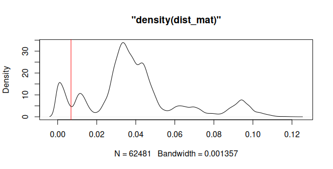
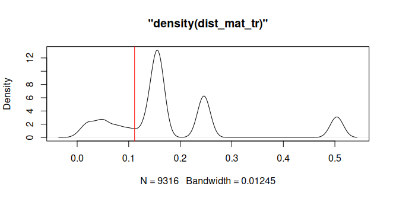
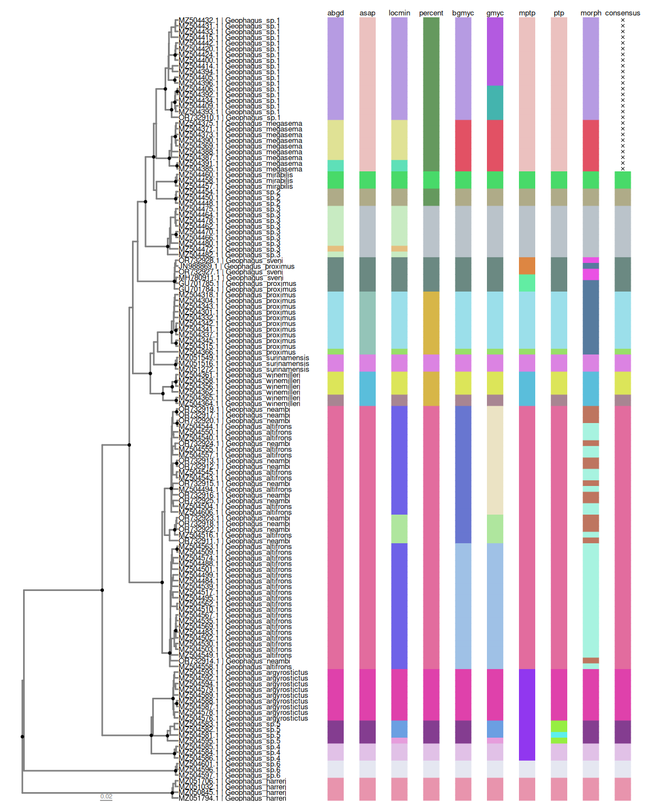

Rationale
There are at least three major steps when doing single-locus species delimitation analysis:
Preparing your data;
Running species delimitation analysis;
Visualizing results.
The rationale of delimtools is to provide functions for all these steps. This guide introduces you to these functions and shows how to apply them to your datasets. In this tutorial, we will use the geophagus dataset provided in this package. This dataset contains 354 cytochrome c oxidase sequences of the Geophagus sensu stricto species group downloaded from GenBank. Most of these sequences are from Ximenes et al. (2021) and are documented in ?geophagus.
Preparing your data
Usually, our main source of information for single-locus species delimitation analysis is a FASTA formated file containing nucleotide sequences. The most straightforward way to import a FASTA formatted file into R Environment is by using ape::read.FASTA():
path_to_file <- system.file("extdata/geophagus.fasta", package = "delimtools")
geophagus <- ape::read.FASTA(file = path_to_file)Since the geophagus dataset is provided along with delimtools, one can simply call it directly:
geophagus
#> 354 DNA sequences in binary format stored in a list.
#>
#> All sequences of same length: 690
#>
#> Labels:
#> MZ504301.1
#> MZ504328.1
#> MZ504318.1
#> MZ504313.1
#> MZ504311.1
#> MZ504312.1
#> ...
#>
#> Base composition:
#> a c g t
#> 0.237 0.282 0.178 0.303
#> (Total: 244.26 kb)Check identifiers across files
Although the header of each FASTA file may contain both an ID and a Description, we recommend keeping the header simple and only using ID. The metadata (the Description) are easily stored in a tabular format file (e.g. csv, tsv, xlsx, etc.), and linked to the FASTA file via the ID. We provide such metadata in Darwin Core format. One can have a glimpse of our Geophagus sequence metadata by checking geophagus_info:
dplyr::glimpse(geophagus_info)
#> Rows: 354
#> Columns: 19
#> $ scientificName <chr> "Geophagus_altifrons", "Geophagus_altifrons", "G…
#> $ scientificNameGenBank <chr> "Geophagus altifrons", "Geophagus altifrons", "G…
#> $ class <chr> "Teleostei", "Teleostei", "Teleostei", "Teleoste…
#> $ order <chr> "Cichliformes", "Cichliformes", "Cichliformes", …
#> $ family <chr> "Cichlidae", "Cichlidae", "Cichlidae", "Cichlida…
#> $ genus <chr> "Geophagus", "Geophagus", "Geophagus", "Geophagu…
#> $ dbid <dbl> 2063684375, 2063684465, 2063684523, 2063684453, …
#> $ gbAccession <chr> "MZ504486.1", "MZ504531.1", "MZ504560.1", "MZ504…
#> $ gene <chr> "coi", "coi", "coi", "coi", "coi", "coi", "coi",…
#> $ length <dbl> 659, 699, 627, 612, 552, 654, 627, 651, 666, 609…
#> $ organelle <chr> "mitochondrion", "mitochondrion", "mitochondrion…
#> $ catalogNumber <chr> "1614", "17578", "1616", "1194", "2748", "1610",…
#> $ country <chr> "Brazil: Tapajós- Jacareacanga- Pará", "Brazil: …
#> $ publishedAs <chr> "Mapping the hidden diversity of the Geophagus s…
#> $ publishedIn <chr> "Unpublished", "Unpublished", "Unpublished", "Un…
#> $ publishedBy <chr> "Ximenes,A.M.", "Ximenes,A.M.", "Ximenes,A.M.", …
#> $ date <chr> "25-OCT-2021", "25-OCT-2021", "25-OCT-2021", "25…
#> $ decimalLatitude <dbl> -6.276008, -3.449100, -6.276008, -1.501489, -6.1…
#> $ decimalLongitude <dbl> -57.74000, -57.73533, -57.74000, -52.68211, -48.…For downstream visualization, all FASTA IDs should have associated metadata; however, the metadata may have more entries than sequences in the FASTA file. The function check_identifiers() will check if all FASTA IDs have entries in the metadata, and if there are any duplicate IDs either in the FASTA file or in the metadata. Let’s check if our FASTA file has associated metadata check_identifiers():
check_identifiers(dna = geophagus, identifier = "gbAccession", data = geophagus_info)
#> ✔ Identifiers passed all checks.Now, let’s omit the first 10 sequences and check again:
check_identifiers(geophagus[11:354], "gbAccession", geophagus_info)
#> ✔ Identifiers passed all checks.Now, let’s omit the first 4 metadata entries and check again:
check_identifiers(geophagus, "gbAccession", geophagus_info[5:354,])
#> Error in `check_identifiers()`:
#> ! Identifiers missing from metadata.
#> ✖ The following identifiers occur in sequence data `geophagus` but are absent
#> from metadata `geophagus_info[5:354, ]`.
#> ℹ Missing identifiers:
#> MZ504525.1, MZ504531.1, MZ504560.1, MZ504486.1Many other functions of delimtools rely on a tabular format file like geophagus_info, so please make sure to have one prior to any analysis.
Cleaning DNA and Haplotype Collapsing
Sometimes, our alignment file may contain non ACTG bases, like ambiguities (N, R, Y, etc), gaps (-), or missing data (?). Inclusion of these bases in delimitation analyses may have unintended consequences in delimitation analyses. We can use the function clean_dna to remove these ambiguities. clean_dna will remove both leading and trailing gaps from the alignment, therefore it will be necessary to realign the dataset after calling clean_dna.
geophagus_clean <- clean_dna(geophagus)
#> Warning: ⚠ You have missing data "('N','-' '?')" or ambiguity inside your sequence, i.e.
#> not padding the ends, and this may have unintended consequences later, as they
#> have now been removed!
#> ℹ The names of the samples are below.
#> GU701784.1, GU701785.1
# and display
geophagus_clean
#> 354 DNA sequences in binary format stored in a list.
#>
#> Mean sequence length: 646.198
#> Shortest sequence: 505
#> Longest sequence: 690
#>
#> Labels:
#> MZ504301.1
#> MZ504328.1
#> MZ504318.1
#> MZ504313.1
#> MZ504311.1
#> MZ504312.1
#> ...
#>
#> Base composition:
#> a c g t
#> 0.237 0.282 0.178 0.303
#> (Total: 228.75 kb)The presence of identical sequences (haplotypes) in an alignment will overestimate the number of lineages detected by tree-based species delimitation methods (e.g. bGMYC, GMYC, PTP, mPTP). Therefore it is best practice to collapse identical haplotypes into unique haplotypes. This is accomplished by calling the hap_collapse function. By default the function will also call clean_dna.
geophagus_collapsed <- hap_collapse(geophagus)
#> Warning: ⚠ You have missing data "('N','-' '?')" or ambiguity inside your sequence, i.e.
#> not padding the ends, and this may have unintended consequences later, as they
#> have now been removed!
#> ℹ The names of the samples are below.
#> GU701784.1, GU701785.1
# and display
geophagus_collapsed
#> 137 DNA sequences in binary format stored in a list.
#>
#> Mean sequence length: 643.007
#> Shortest sequence: 505
#> Longest sequence: 690
#>
#> Labels:
#> MZ504301.1
#> MZ504318.1
#> MZ504341.1
#> MZ504337.1
#> MZ504342.1
#> MZ504304.1
#> ...
#>
#> Base composition:
#> a c g t
#> 0.238 0.281 0.177 0.304
#> (Total: 88.09 kb)Notice that from the initial 354 DNA sequences, hap_collapse returned a total of 136 unique DNA sequences. This result may vary if setting collapseSubstrings to FALSE:
geophagus_collapsed <- hap_collapse(geophagus, collapseSubstrings = FALSE)
#> Warning: ⚠ You have missing data "('N','-' '?')" or ambiguity inside your sequence, i.e.
#> not padding the ends, and this may have unintended consequences later, as they
#> have now been removed!
#> ℹ The names of the samples are below.
#> GU701784.1, GU701785.1
# and display
geophagus_collapsed
#> 246 DNA sequences in binary format stored in a list.
#>
#> Mean sequence length: 639.764
#> Shortest sequence: 505
#> Longest sequence: 690
#>
#> Labels:
#> MZ504301.1
#> MZ504328.1
#> MZ504318.1
#> MZ504341.1
#> MZ504337.1
#> MZ504299.1
#> ...
#>
#> Base composition:
#> a c g t
#> 0.237 0.282 0.177 0.303
#> (Total: 157.38 kb)After setting collapseSubstrings to FALSE, we obtained 246 unique DNA sequences. These additional 108 sequences are in reality shorter but identical sequences which differ only by the presence of leading and trailing gaps. By setting both clean_dna and collapseSubstrings to TRUE, the default of hap_collapse, we ensure the removal of these leading and trailing gaps from sequences before collapsing these sequences into unique haplotypes.
To visualize the relationships between these unique haplotypes and any duplicates, we may use the haplotype_tbl function:
haplotype_tbl(geophagus, verbose = FALSE)
#> # A tibble: 137 × 3
#> labels n_seqs collapsed
#> <chr> <dbl> <chr>
#> 1 MZ504318.1 38 MZ504328.1, MZ504313.1, MZ504311.1, MZ504312.1, MZ504309.1…
#> 2 MZ504540.1 20 MZ504505.1, MZ504553.1, MZ504554.1, MZ504552.1, MZ504542.1…
#> 3 MZ504420.1 19 MZ504417.1, MZ504437.1, MZ504425.1, MZ504427.1, MZ504422.1…
#> 4 MZ504488.1 16 MZ504538.1, KU568830.1, JN026709.1, MZ504522.1, MZ504523.1…
#> 5 MZ504484.1 15 MZ504496.1, MZ504487.1, MZ504573.1, MZ504560.1, MZ504497.1…
#> 6 MZ504462.1 14 MZ504479.1, MZ504477.1, MZ504481.1, MZ504476.1, MZ504463.1…
#> 7 MZ504375.1 13 MZ504372.1, MZ504382.1, MZ504381.1, MZ504379.1, MZ504383.1…
#> 8 MZ504535.1 8 MZ504515.1, MZ504525.1, MZ504533.1, MZ504534.1, MZ504536.1…
#> 9 MZ504393.1 8 MZ504445.1, MZ504413.1, MZ504407.1, MZ504408.1, MZ504410.1…
#> 10 MZ504400.1 6 MZ504404.1, MZ504401.1, MZ504402.1, MZ504403.1, MZ504399.1
#> # ℹ 127 more rowsWe may also collapse other types of information by using collapse_others. For example we may take the collapsed haplotype table and onto it collapse our metadata to see, for example, which species and sampling localities are associated with each haplotype:
haps_df <- haplotype_tbl(geophagus, verbose = FALSE)
collapse_others(data = geophagus_info,
hap_tbl = haps_df,
labels = "gbAccession",
cols = c("scientificName", "country"))
#> # A tibble: 137 × 5
#> labels n_seqs collapsed collapsed_scientific…¹ collapsed_country
#> <chr> <dbl> <chr> <chr> <chr>
#> 1 MZ504318.1 38 MZ504328.1, MZ504… Geophagus_proximus Brazil: Lago do …
#> 2 MZ504540.1 20 MZ504505.1, MZ504… Geophagus_altifrons, … Brazil: Tocantin…
#> 3 MZ504420.1 19 MZ504417.1, MZ504… Geophagus_sp.1 Brazil: Branco- …
#> 4 MZ504488.1 16 MZ504538.1, KU568… Geophagus_altifrons, … Brazil: Água Boa…
#> 5 MZ504484.1 15 MZ504496.1, MZ504… Geophagus_altifrons Brazil: São Seba…
#> 6 MZ504462.1 14 MZ504479.1, MZ504… Geophagus_sp.3 Brazil: Iriri- P…
#> 7 MZ504375.1 13 MZ504372.1, MZ504… Geophagus_megasema Brazil: Mamirauá…
#> 8 MZ504535.1 8 MZ504515.1, MZ504… Geophagus_altifrons Brazil: Maués-Aç…
#> 9 MZ504393.1 8 MZ504445.1, MZ504… Geophagus_sp.1 Brazil: Xingu- u…
#> 10 MZ504400.1 6 MZ504404.1, MZ504… Geophagus_sp.1 Brazil: Demeni- …
#> # ℹ 127 more rows
#> # ℹ abbreviated name: ¹collapsed_scientificNameRunning species delimitation analysis
After preparing your data (alignments and phylogenetic trees), the next step it to run species delimitation analyses and combine them into a single tbl_df. As of v0.3.0, delimtools includes executables of the ABGD, ASAP, GMYC, bGMYC, PTP and mPTP methods, therefore, it requires no outside dependencies to run these delimitation methods.
Following are examples of species delimitation methods implemented in delimtools. The first three methods are distance-based methods and thus use the full aligned sequence matrix. Subsequent methods are tree-based methods; the phylogenetic trees need to be estimated externally, and should be based on unique haplotypes. For the convenience of this vignette, we provide the full data matrix (geophagus), a phylogram (geophagus_raxml) and a time-tree (geophagus_beast) as part of this package.
ABGD
The ABGD method is run by executing the abgd function and giving it an ape::DNAbin object which is a S3 R object containing an aligned FASTA file. It will also accept a path to an aligned FASTA. The result is then transformed into a table using the abgd_tbl function.
# geophagus - the `ape::DNAbin` object supplied with this package
abgd_delim <- abgd(geophagus)
#> Simple distance
abgd_df <- abgd_tbl(abgd_delim)
# print the dataframe
print(abgd_df)
#> # A tibble: 354 × 2
#> labels abgd
#> <chr> <int>
#> 1 MZ504301.1 1
#> 2 MZ504328.1 1
#> 3 MZ504318.1 1
#> 4 MZ504313.1 1
#> 5 MZ504311.1 1
#> 6 MZ504312.1 1
#> 7 MZ504309.1 1
#> 8 MZ504341.1 1
#> 9 MZ504337.1 1
#> 10 MZ504299.1 1
#> # ℹ 344 more rowsASAP
The ASAP method is run by executing the asap function and giving it an ape::DNAbin object. It will also accept a path to an aligned FASTA. The result is then transformed into a table using the asap_tbl function.
# geophagus - the `ape::DNAbin` object supplied with this package
asap_delim <- asap(geophagus)
asap_df <- asap_tbl(asap_delim)
# print the dataframe
print(asap_df)
#> # A tibble: 354 × 2
#> labels asap
#> <chr> <int>
#> 1 MZ504301.1 1
#> 2 MZ504328.1 1
#> 3 MZ504318.1 1
#> 4 MZ504313.1 1
#> 5 MZ504311.1 1
#> 6 MZ504312.1 1
#> 7 MZ504309.1 1
#> 8 MZ504341.1 1
#> 9 MZ504337.1 1
#> 10 MZ504299.1 1
#> # ℹ 344 more rowsLocal Minima
We can run the Local Minima analysis by using the spider function localMinima. This function requires a genetic distance matrix as input for analysis.
dist_mat <- ape::dist.dna(geophagus, model = "raw", pairwise.deletion = TRUE)
locmin <- spider::localMinima(dist_mat)
#> [1] 0.006828358 0.018994392 0.040791871 0.055999413 0.067151612 0.082105695We can plot the locmin object to select the threshold. We will use the first value of the locmin object:

Since Local Minima output is a numeric vector, we need to extract the results using locmin_tbl.
locmin_df <- locmin_tbl(dist_mat, threshold = locmin$localMinima[1])
print(locmin_df)
#> # A tibble: 354 × 2
#> labels locmin
#> <chr> <int>
#> 1 MZ504301.1 1
#> 2 MZ504328.1 1
#> 3 MZ504318.1 1
#> 4 MZ504313.1 1
#> 5 MZ504311.1 1
#> 6 MZ504312.1 1
#> 7 MZ504309.1 1
#> 8 MZ504341.1 1
#> 9 MZ504337.1 1
#> 10 MZ504299.1 1
#> # ℹ 344 more rowsWe can use patristic distances to generate species partitions as well. Using the geophagus_beast tree, we can apply a threshold to classify tips of the tree by using its branch lengths:
dist_mat_tr <- ape::cophenetic.phylo(as.phylo(geophagus_beast)) |>
as.dist()
locmin_tr <- spider::localMinima(dist_mat_tr)
#> [1] 0.1114476 0.2020889 0.3527801
plot(locmin_tr) |>
abline(v=locmin_tr$localMinima[1],col="red")
treedist_df <- locmin_tbl(dist_mat_tr,
threshold = locmin_tr$localMinima[1],
delimname = "treedist")
print(treedist_df)
#> # A tibble: 137 × 2
#> labels treedist
#> <chr> <int>
#> 1 GU701784.1 1
#> 2 GU701785.1 1
#> 3 JN988869.1 1
#> 4 MH780911.1 1
#> 5 OR732927.1 1
#> 6 OR732928.1 1
#> 7 MZ050845.1 2
#> 8 MZ051032.1 2
#> 9 MZ051706.1 2
#> 10 MZ051794.1 2
#> # ℹ 127 more rowsFixed threshold
Finally, we can also use locmin_tbl to create a species partition using a fixed threshold. For example, we can use a threshold of 2% to generate species partitions:
percent_df <- locmin_tbl(dist_mat, threshold = 0.02, delimname = "percent")
print(percent_df)
#> # A tibble: 354 × 2
#> labels percent
#> <chr> <int>
#> 1 MZ504301.1 1
#> 2 MZ504328.1 1
#> 3 MZ504318.1 1
#> 4 MZ504313.1 1
#> 5 MZ504311.1 1
#> 6 MZ504312.1 1
#> 7 MZ504309.1 1
#> 8 MZ504341.1 1
#> 9 MZ504337.1 1
#> 10 MZ504299.1 1
#> # ℹ 344 more rowsGMYC
The GMYC method is run by executing the gmyc function and giving it an ape::phylo object. The GMYC method requires an ultrametric tree file of class phylo as input for analysis. BEAST trees generated in Tree Annotator need to be read in using the treeio:read.beast() function, and then need to be converted into a phylo object by using ape::as.phylo.
# beast_tree - the Nexus formatted ultrametric phylogenetic tree object supplied with this package
path_to_file <- system.file("extdata/geophagus_beast.nex", package = "delimtools")
beast_tree <- treeio::read.beast(path_to_file) |>
ape::as.phylo()Run delimitation.
Now, lets check the summary:
summary(gmyc_delim)
#> Result of GMYC species delimitation
#>
#> method: single
#> likelihood of null model: 995.0483
#> maximum likelihood of GMYC model: 1010.027
#> likelihood ratio: 29.95779
#> result of LR test: 3.124266e-07***
#>
#> number of ML clusters: 19
#> confidence interval: 18-22
#>
#> number of ML entities: 21
#> confidence interval: 19-25
#>
#> threshold time: -0.0164289And let’s transform the results into a table using the gmyc_tbl function.
gmyc_df <- gmyc_tbl(gmyc_delim)
# print the dataframe
print(gmyc_df)
#> # A tibble: 137 × 2
#> labels gmyc
#> <chr> <int>
#> 1 GU701784.1 1
#> 2 GU701785.1 1
#> 3 MH780911.1 1
#> 4 OR732927.1 1
#> 5 JN988869.1 1
#> 6 OR732928.1 1
#> 7 MZ504387.1 2
#> 8 MZ504388.1 2
#> 9 MZ504369.1 2
#> 10 MZ504390.1 2
#> # ℹ 127 more rowsbGMYC
The bGMYC method is run by executing the bgmyc function and giving it an ape::phylo object. The bGMYC method requires an ultrametric tree file of class phylo as input for analysis. BEAST trees generated in Tree Annotator need to be read in using the treeio:read.beast() function, and then need to be converted into a phylo object by using ape::as.phylo.
# beast_tree already loaded and converted
bgmyc_delim <- bgmyc(beast_tree)
#> bGMYC (C engine): 137 tips, 11000 MCMC steps, 100 post-burnin samples
#> 10%
#> 20%
#> 30%
#> 40%
#> 50%
#> 60%
#> 70%
#> 80%
#> 90%
#> 100%
#> Acceptance rates (py / pc / t):
#> 0.5252 0.8393 0.3450The results then need to be transformed into a table using the bgmyc_tbl function. By default, 0.05 is used as default posterior probability threshold for clustering samples into species partitions.
bgmyc_df <- bgmyc_tbl(bgmyc_delim)
print(bgmyc_df)
#> # A tibble: 137 × 2
#> labels bgmyc
#> <chr> <int>
#> 1 GU701784.1 1
#> 2 GU701785.1 1
#> 3 JN988869.1 1
#> 4 MH780911.1 1
#> 5 MZ050845.1 2
#> 6 MZ051032.1 2
#> 7 MZ051272.1 3
#> 8 MZ051516.1 3
#> 9 MZ051549.1 3
#> 10 MZ051706.1 2
#> # ℹ 127 more rowsPTP and mPTP
We can run both PTP and mPTP analysis by using the mptp function. Specifying the arguments (“multi” for mPTP; “single” for PTP) in the parameters determines which analysis is performed; the default is “multi” for mPTP. The mptp function accepts either phylo tree object or a Newick tree file. We can use either ape::read.tree() or treeio::read.newick() to read in our Newick file; it will be automatically stored as phylo object.
# raxml_tree - the Newick formatted phylogenetic tree object supplied with this package
path_to_file <- system.file("extdata/geophagus_raxml.nwk", package = "delimtools")
raxml_tree <- treeio::read.newick(path_to_file)Run delimitation.
mptp_delim <- mptp(raxml_tree)
#> Score Null Model: 681.702507
#> Number of delimited species: 14
mptp_df <- mptp_tbl(mptp_delim)
print(mptp_df)
#> # A tibble: 137 × 2
#> labels mptp
#> <chr> <int>
#> 1 MZ051794.1 1
#> 2 MZ050845.1 1
#> 3 MZ051032.1 1
#> 4 MZ051706.1 1
#> 5 MZ504576.1 2
#> 6 MZ504578.1 2
#> 7 MZ504579.1 2
#> 8 MZ504588.1 2
#> 9 MZ504587.1 2
#> 10 MZ504592.1 2
#> # ℹ 127 more rowsFor convenience we have made a ptp() wrapper around mptp() that defaults to the “single” argument of the method parameter. Similarly, we also made a ptp_tbl() wrapper around mptp_tbl().
# raxml_tree already loaded and converted
ptp_delim <- ptp(raxml_tree)
#> Score Null Model: 681.702507
#> Number of delimited species: 17
ptp_df <- ptp_tbl(ptp_delim)
print(ptp_df)
#> # A tibble: 137 × 2
#> labels ptp
#> <chr> <int>
#> 1 MZ051794.1 1
#> 2 MZ050845.1 1
#> 3 MZ051032.1 1
#> 4 MZ051706.1 1
#> 5 MZ504576.1 2
#> 6 MZ504578.1 2
#> 7 MZ504579.1 2
#> 8 MZ504588.1 2
#> 9 MZ504587.1 2
#> 10 MZ504592.1 2
#> # ℹ 127 more rowsTo estimate a minimum branch length for your dataset, use minbr_len.
Morphology
We can also turn species ranks or results from morphological analysis into a species partition by using morph_tbl. For the geophagus dataset, we will use the scientific names in geophagus_info to accomplish this.
morph_df <- morph_tbl(labels = geophagus_info$gbAccession,
sppVector = geophagus_info$scientificName) |>
dplyr::filter(labels %in% haps_df$labels)
print(morph_df)
#> # A tibble: 137 × 2
#> labels morph
#> <chr> <int>
#> 1 MZ504501.1 1
#> 2 MZ504504.1 1
#> 3 MZ504510.1 1
#> 4 MZ504543.1 1
#> 5 MZ504545.1 1
#> 6 MZ504488.1 1
#> 7 MZ504483.1 1
#> 8 MZ504558.1 1
#> 9 MZ504484.1 1
#> 10 MZ504502.1 1
#> # ℹ 127 more rowsJoining Species Delimitation Outputs
Since we have several species partitions, we need to merge them into a single data frame in order to visualize the results. However, since each method has its own rankings, we need to recode them prior to any further analysis. For this task, we can use delim_join. This function takes a list of species partitions to recode and then join.
all_delims <- list(abgd_df, asap_df, locmin_df, percent_df, treedist_df,
bgmyc_df, gmyc_df,
mptp_df, ptp_df,
morph_df)
all_delims_df <- delim_join(all_delims)
#> Warning: Dimensions are not the same across tables.
#> ✖ You've supplied inputs with different dimensions.
#> ℹ `delim 1` has 354 rows and 2 columns
#> ℹ `delim 2` has 137 rows and 2 columns
#> Dimensions are not the same across tables.
#> ✖ You've supplied inputs with different dimensions.
#> ℹ `delim 1` has 354 rows and 2 columns
#> ℹ `delim 2` has 137 rows and 2 columns
#> Dimensions are not the same across tables.
#> ✖ You've supplied inputs with different dimensions.
#> ℹ `delim 1` has 354 rows and 2 columns
#> ℹ `delim 2` has 137 rows and 2 columns
#> Dimensions are not the same across tables.
#> ✖ You've supplied inputs with different dimensions.
#> ℹ `delim 1` has 354 rows and 2 columns
#> ℹ `delim 2` has 137 rows and 2 columns
#> Dimensions are not the same across tables.
#> ✖ You've supplied inputs with different dimensions.
#> ℹ `delim 1` has 354 rows and 2 columns
#> ℹ `delim 2` has 137 rows and 2 columns
#> Dimensions are not the same across tables.
#> ✖ You've supplied inputs with different dimensions.
#> ℹ `delim 1` has 354 rows and 2 columns
#> ℹ `delim 2` has 137 rows and 2 columnsWe can summarize the all_delims_df object by using the report_delim function.
report_delim(all_delims_df)
#> ℹ Joined delimitations have a total of 46 unique species partitions.
#> ℹ Check below the number of species partitions per method:
#>
#>
#> |method | partitions|
#> |:--------|----------:|
#> |locmin | 21|
#> |gmyc | 21|
#> |abgd | 19|
#> |bgmyc | 18|
#> |ptp | 17|
#> |morph | 16|
#> |asap | 14|
#> |mptp | 14|
#> |percent | 12|
#> |treedist | 7|
#> # A tibble: 137 × 11
#> labels abgd asap locmin percent treedist bgmyc gmyc mptp ptp morph
#> <chr> <chr> <chr> <chr> <chr> <chr> <chr> <chr> <chr> <chr> <chr>
#> 1 MZ504301.1 sp1 sp20 sp1 sp41 sp45 sp1 sp1 sp1 sp1 sp37
#> 2 MZ504318.1 sp1 sp20 sp1 sp41 sp45 sp1 sp1 sp1 sp1 sp37
#> 3 MZ504341.1 sp1 sp20 sp1 sp41 sp45 sp1 sp1 sp1 sp1 sp37
#> 4 MZ504337.1 sp1 sp20 sp1 sp41 sp45 sp1 sp1 sp1 sp1 sp37
#> 5 MZ504342.1 sp1 sp20 sp1 sp41 sp45 sp1 sp1 sp1 sp1 sp37
#> 6 MZ504304.1 sp1 sp20 sp1 sp41 sp45 sp1 sp1 sp1 sp1 sp37
#> 7 MZ504332.1 sp1 sp20 sp1 sp41 sp45 sp1 sp1 sp1 sp1 sp37
#> 8 MZ504343.1 sp1 sp20 sp1 sp41 sp45 sp1 sp1 sp1 sp1 sp37
#> 9 MZ504315.1 sp1 sp20 sp1 sp41 sp45 sp1 sp1 sp1 sp1 sp37
#> 10 MZ504345.1 sp1 sp20 sp1 sp41 sp45 sp1 sp1 sp1 sp1 sp37
#> # ℹ 127 more rowsWe can also check the match ratio statistics of Ahrens et al (2014) using match_ratio.
match_ratio(all_delims_df) |>
dplyr::arrange(dplyr::desc(match_ratio)) |>
print(n=Inf)
#> # A tibble: 45 × 5
#> pairs delim_1 delim_2 n_match match_ratio
#> <chr> <int> <int> <int> <dbl>
#> 1 abgd-locmin 19 21 17 0.85
#> 2 asap-percent 14 12 10 0.77
#> 3 bgmyc-gmyc 18 21 15 0.77
#> 4 abgd-bgmyc 19 18 14 0.76
#> 5 bgmyc-ptp 18 17 13 0.74
#> 6 abgd-ptp 19 17 13 0.72
#> 7 asap-ptp 14 17 11 0.71
#> 8 locmin-gmyc 21 21 15 0.71
#> 9 gmyc-ptp 21 17 13 0.68
#> 10 asap-morph 14 16 10 0.67
#> 11 locmin-bgmyc 21 18 13 0.67
#> 12 bgmyc-morph 18 16 11 0.65
#> 13 mptp-ptp 14 17 10 0.65
#> 14 asap-mptp 14 14 9 0.64
#> 15 locmin-ptp 21 17 12 0.63
#> 16 asap-bgmyc 14 18 10 0.62
#> 17 percent-ptp 12 17 9 0.62
#> 18 abgd-asap 19 14 10 0.61
#> 19 abgd-gmyc 19 21 12 0.6
#> 20 percent-bgmyc 12 18 9 0.6
#> 21 abgd-percent 19 12 9 0.58
#> 22 percent-morph 12 16 8 0.57
#> 23 abgd-morph 19 16 9 0.51
#> 24 asap-gmyc 14 21 9 0.51
#> 25 bgmyc-mptp 18 14 8 0.5
#> 26 gmyc-morph 21 16 9 0.49
#> 27 abgd-mptp 19 14 8 0.48
#> 28 percent-gmyc 12 21 8 0.48
#> 29 ptp-morph 17 16 8 0.48
#> 30 mptp-morph 14 16 7 0.47
#> 31 asap-locmin 14 21 8 0.46
#> 32 gmyc-mptp 21 14 8 0.46
#> 33 percent-mptp 12 14 6 0.46
#> 34 locmin-morph 21 16 8 0.43
#> 35 locmin-percent 21 12 7 0.42
#> 36 percent-treedist 12 7 4 0.42
#> 37 locmin-mptp 21 14 7 0.4
#> 38 asap-treedist 14 7 4 0.38
#> 39 treedist-mptp 7 14 4 0.38
#> 40 treedist-ptp 7 17 4 0.33
#> 41 abgd-treedist 19 7 4 0.31
#> 42 treedist-bgmyc 7 18 3 0.24
#> 43 locmin-treedist 21 7 3 0.21
#> 44 treedist-gmyc 7 21 3 0.21
#> 45 treedist-morph 7 16 2 0.17By checking the results, all comparisons including treedist have a low match_ratio. Since species partitions with very low match_ratio values can impact consensus calculations, we will remove treedist before visualizing our results.
all_delims_df <- dplyr::select(all_delims_df, -treedist)
report_delim(all_delims_df)
#> ℹ Joined delimitations have a total of 44 unique species partitions.
#> ℹ Check below the number of species partitions per method:
#>
#>
#> |method | partitions|
#> |:-------|----------:|
#> |locmin | 21|
#> |gmyc | 21|
#> |abgd | 19|
#> |bgmyc | 18|
#> |ptp | 17|
#> |morph | 16|
#> |asap | 14|
#> |mptp | 14|
#> |percent | 12|
#> # A tibble: 137 × 10
#> labels abgd asap locmin percent bgmyc gmyc mptp ptp morph
#> <chr> <chr> <chr> <chr> <chr> <chr> <chr> <chr> <chr> <chr>
#> 1 MZ504301.1 sp1 sp20 sp1 sp41 sp1 sp1 sp1 sp1 sp37
#> 2 MZ504318.1 sp1 sp20 sp1 sp41 sp1 sp1 sp1 sp1 sp37
#> 3 MZ504341.1 sp1 sp20 sp1 sp41 sp1 sp1 sp1 sp1 sp37
#> 4 MZ504337.1 sp1 sp20 sp1 sp41 sp1 sp1 sp1 sp1 sp37
#> 5 MZ504342.1 sp1 sp20 sp1 sp41 sp1 sp1 sp1 sp1 sp37
#> 6 MZ504304.1 sp1 sp20 sp1 sp41 sp1 sp1 sp1 sp1 sp37
#> 7 MZ504332.1 sp1 sp20 sp1 sp41 sp1 sp1 sp1 sp1 sp37
#> 8 MZ504343.1 sp1 sp20 sp1 sp41 sp1 sp1 sp1 sp1 sp37
#> 9 MZ504315.1 sp1 sp20 sp1 sp41 sp1 sp1 sp1 sp1 sp37
#> 10 MZ504345.1 sp1 sp20 sp1 sp41 sp1 sp1 sp1 sp1 sp37
#> # ℹ 127 more rowsVisualizing Results
We can visualize the results by using delim_autoplot. This function will plot a phylogenetic tree alongside with the results contained in all_delims_df. We will use the geophagus_beast tree to visualize the results.
# geophagus_beast - the Nexus formatted ultrametric phylogenetic tree object used for visualization
path_to_file <- system.file("extdata/geophagus_beast.nex", package = "delimtools")
geophagus_tree <- treeio::read.beast(path_to_file)
# customize tip labels of the tree
tip_tab <- geophagus_info |>
dplyr::filter(gbAccession %in% geophagus_beast@phylo$tip.label) |>
dplyr::mutate(labs = glue::glue("{gbAccession} | {scientificName}")) |>
dplyr::select(gbAccession, labs, scientificName)
# create a customized color palette
cols <- delim_brewer(delim = all_delims_df, package = "randomcoloR", seed = 42)
# plot
delim_autoplot(all_delims_df,
geophagus_beast,
consensus = TRUE,
n_match = 5,
tbl_labs = tip_tab,
col_vec = cols,
hexpand = 0.7,
widths = c(0.5, 0.5))